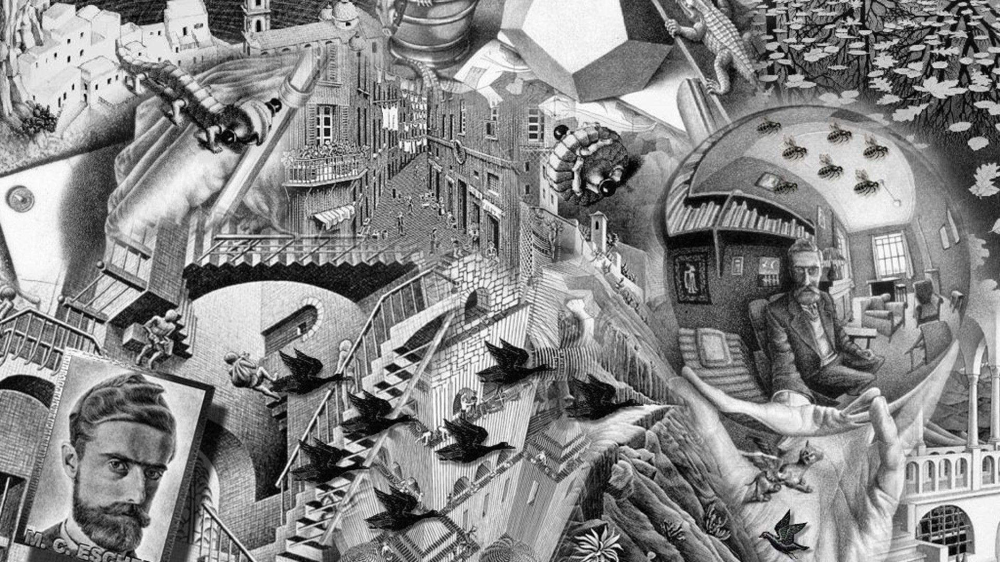

The Narcissist Paradox (Not About You)
I am strange Narcissist
Sep 09, 2021
This sentence is a lie. The smallest positive integer not definable in under sixty letters. Can God create a neighbor’s wife so busty that even he cannot help himself from coveting her sweet rack? Anyone who has found themselves unable to sleep at night or had a pretentious streak to them in high school has probably at one point in time thought about these types of paradoxes. Most paradoxes such as the first two listed above essentially amount to linguistic sleight of hand while the other is meant to keep monks and priests from thinking about sex. Despite the seeming pointlessness of the three paradoxes mentioned above, there are real logical paradoxes that seem to be fundamental to the universe such as the halting problem and Gödel’s incompleteness theorems (if you consider it a Paradox which Gödel himself did as he stated that the liar’s paradox “This sentence is a lie” is analogous to his proof of incompleteness). But this is not a boring treatise on logical paradoxes or a philosophic discussion on the implications of Gödel’s incompleteness theorem which you can easily find at your local college campus in an undergraduate philosophy class. Instead, this is about you, (isn’t everything?) this is about narcissism.
In David Foster Wallace’s short story Good Old Neon the main character talks about something he calls, “the fraudulence paradox”. To Wallace, the fraudulence paradox is when a fraudulent individual acknowledges his own fraudulence. What makes this a paradox is that awareness of one’s fraudulence is actually a demonstration of authenticity. Could a real fraud genuinely admit to being a fraud? If someone is genuine for admitting that he is a fraud then he cannot be a fraud and is thus not genuine since he lied about being a fraud and if he isn’t a fraud but admitted to being one then he genuinely is a fraud. It’s a contradiction, a paradox. And just like that, we’re back to wondering if an almighty God can make a pair of tits so big and heavy that even he can’t lift them. So, what’s the point of all this if it can’t be solved, isn’t the whole essence of a paradox that it’s inherently contradictory and thus unanswerable?
Let’s go back to the liar’s paradox which Gödel himself was not only inspired by but in his own words believes to be a proper analog to his own proof that any sufficiently advanced system will necessarily contain ‘True’ statements which cannot be proven by the system. In this case, “this sentence is a lie”. The sufficiently advanced system in this example is language and the true unprovable statement that is produced is that “the sentence is a lie”. But why do I assume that the sentence “this sentence is a lie” is true and not false? Well, for starters it’s not called the truther paradox it’s called the liar's paradox, and the second reason will be explained later. The reason paradoxes like these exist is because of self-reference which the liar’s paradox uses to recursively call itself. If the sentence simply said “some sentences are lies”, or “John’s sentence is a lie” there would be no paradox. The problems of paradox stems from “this sentence” just as the fraudulence paradox is caused by the self-realization that one is a fraud.
Turing’s Halting problem is the computer science equivalent to both Gödel’s incompleteness theorem as well as the liar's paradox and its brief explanation will help shed light on the problem of self-reference. The Halting problem asks a simple question: given a set of instructions (a code or program) and the specifications (blueprint) of the machine that is going to be used to execute those instructions, can a second machine be made to always answer correctly if the machine will execute the program and halt (stop) or loop forever? The answer is NO. Turing proved this using an ingenious hypothetical which supposes that such a machine already exists and works perfectly. We then feed the machine its own specifications (blueprints) as both the blueprint and the input. Now, what happens if this input causes the machine to run forever? The machine would halt and print the result that it does not halt. But, yes, it's another paradox (And yes I know I’m missing the part about the negator but like I said I’m not waxing philosophic about this, this isn’t about the Halting problem it’s just a way to demonstrate the problems of fraudulence and self-reference).
So why bother explaining this, what does this have to do with the fraudulence paradox? Nothing, remember this isn’t about the fraudulence paradox this is about narcissism, this is about you. The character in Good Old Neon isn’t a fraud just as the machine that can perfectly detect if a machine will halt or not can't possibly exist. It’s a contradiction. The real problem is not fraudulence, the problem is self-reference. The entire paradox was just a red herring to distract you from the real problem, from you, from narcissism. “This sentence is a lie” just as the original admission of fraudulence by the character in the story was a lie. The admission of fraudulence was just a way to protect himself from the truth, to shield himself from the reality of true fraudulence. The fraudulence paradox is not a paradox it is a coping mechanism designed to shield you from yourself. It’s true that once you admit that you’re a fraud you stop becoming one but not because you are authentic, but because the self you think you are different from doesn’t exist. You are you stupid. You’re a fraud because you stopped identifying with yourself and have instead chosen to identify with the fantasies in your head of who you are, “I’m Fraud”. “Hi, Fraud I’m Wittgenfine”.
Turing proved the halting problem is impossible through reductio ad absurdum which just means that you assume the opposite of what you are trying to demonstrate and by doing so and working through the problem under these assumptions you prove it leads to a contradiction. If you assume you’re a fraud well then you can’t be, but this paradox has another layer to it which is why it’s answerable and why this defense mechanism that the character in Wallace’s story attempted to guard himself so tightly within is the real fraudulence paradox. The only real paradox was the paradox itself. There’s a reason why the Greek word Nous (intellect/understanding) sounds so much like the word noose which Wallace himself used to kill himself. There is no self-understanding, finding yourself is suicide. So the fraudulence paradox wasn’t a paradox at all, it was a defense mechanism, it was a retreat into “self-knowledge” or “self-reflection” and self-reference which is just another layer of the defense because the truth is that the character in Good Old Neon never truly saw himself as a fraud. If he did he couldn’t have identified himself as one. He’s the one who came up with the paradox, he knows he can’t be a fraud and yet he clings to it, why? Because the real fraudulence that occurred was the foe realization that he was a fraud, it was the last line of defense protecting himself from the truth which is why the character in the story is so obsessed with the fraudulence paradox in the first place. Its purpose is escapism, a means to avoid his own reflection staring back at him so that he didn’t have to acknowledge the person in the mirror was himself.
Most people have probably asked themselves “am I a narcissist?”, which is determined not by the answer but by self-reference. Whether you answer yes or no is irrelevant the true answer is in how long and or how deeply you consider it. Are you a narcissist? I don’t know, ask the mirror. Most people see themselves as the voices in their head, they identify with the inner monologue, with their aspiration, with who they are on the inside. “Yes I cheated on my wife but that’s not who I am”. Really? Then who are you and why did the guy fucking that girl have your wedding ring on? Maybe if Hitler didn’t kill himself in that bunker he could have used that in his defense at the Nuremberg trials but I have a strange suspicion that those pesky lawyers probably would have found a way around his “I’m a good person on the inside though” defense. So why doesn’t Hitler get the pass but you do? Granted you probably killed fewer Jews but whose to say old uncle Adolf didn’t have just as good, rich, and vibrant an inner life as you, and who's to say that was the real Adolph? Besides, who are you to judge, aren’t you the same hypothetical guy who cheated on his wife from before?
If you have read the blog, The last Psychiatrist you are probably familiar with the thesis that “Narcissism is not grandiosity”. The importance of this statement is not just that it is obviously true but that real narcissism is not self-obsession but self-obfuscation. Narcissism is not grandiosity because that’s just another way for you to escape from your own narcissism. “I’m not good enough to be a real narcissist”. What’s important about the fraudulence paradox is not that it is some insightful philosophic problem for metaphysicians or psychologists but that it keeps you from the truth, from yourself, “This sentence is a lie”. The paradox was not created to elaborate on self-deception but to both justify and hide the real self-deception that is present. You are not a fraud, you are not even a narcissist you are what you do, everything else is just a game you play to hide from this fact. I know “This sentence is a lie” is true not because of its words but because of its actions, its appeal to self-reference.